Individual Claim Reserving
ACTL3143 & ACTL5111 Deep Learning for Actuaries
Introduction
Lecture Outline
Introduction
Insurance Claim Payments and Case Estimates
Benchmark: Aggregate Reserving
Individual Claim Modelling Choices
Preprocessing One Claim
Splitting Claims by Finalisation Quarter
Splitting Claims by Notification Quarter (Advanced)
Case Study: Synthetic Claims
Fitting the Models
Individual-level Metrics
Portfolio-level Metrics
Wrapping Up
Individual claim reserving
An accident has occurred, the insurer has been notified, and maybe parts of the claim have already been paid, now we need to guess how much remains in this realised claim.
This is potentially a promising application for neural networks.
Ultimate claim size
For claim k, we want to know the ultimate claim size U_k := \sum_{t} P_{k,t},
This is the sum of all incremental payments P_{k,t} (also called partial payments) over the complete lifetime of the claim.
Assumption: payments are positive
We assume P_{k,t} \ge 0 throughout. In reality some payments are negative — called recoveries (e.g. money coming back from a third party or a salvaged vehicle). They are typically so rare and small relative to normal payments that ignoring them is reasonable (though this depends on the dataset).
Outstanding claim amount
Say the valuation date is v, then we’ve seen the history of the claim \mathcal{H}_{k,v} to that time, including past payments.
So the outstanding (future unpaid amount) for claim k is O_k(v) := \sum_{t>v} P_{k,t}.
If the claim is still ongoing then U_k = \sum_{t \le v} P_{k,t} + O_k(v) \,.
In words: \text{Ultimate} = \text{Cumulative payments before } v + \text{Outstanding amount from } v \text{ onwards}
Total outstanding
For a portfolio, we’d like to know the total outstanding
T(v) := \sum_{k\in\mathcal{O}(v)} O_k(v) \,, where \mathcal{O}(v) is the set of all open claims at valuation time v.
Note: this doesn’t include incurred but not reported (IBNR) claims.
The total outstanding, visually
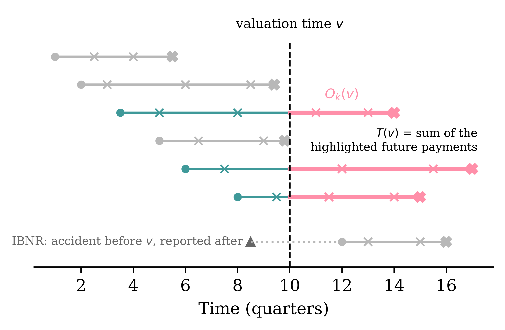
Each open claim’s future payments (highlighted) get summed to give T(v).
The bottom claim has occurred before v but hasn’t been notified yet. No individual model can reserve for a claim it cannot see — IBNR needs a separate adjustment.
Why is pricing different from reserving?
- Pricing is prospective and per-policy: no claim exists yet, and we predict the frequency/severity of hypothetical future claims from policy covariates (recall the French motor lectures).
- Reserving is about claims that have already happened: we condition on each claim’s unfolding history — payments to date, case estimates — to predict what is still to be paid.
- Consequence for the ML setup: pricing rows are policies with static features; reserving rows are claim-quarter snapshots with time-varying features. That’s why this lecture needs a whole preprocessing pipeline.
Insurance Claim Payments and Case Estimates
Lecture Outline
Introduction
Insurance Claim Payments and Case Estimates
Benchmark: Aggregate Reserving
Individual Claim Modelling Choices
Preprocessing One Claim
Splitting Claims by Finalisation Quarter
Splitting Claims by Notification Quarter (Advanced)
Case Study: Synthetic Claims
Fitting the Models
Individual-level Metrics
Portfolio-level Metrics
Wrapping Up
The key dates
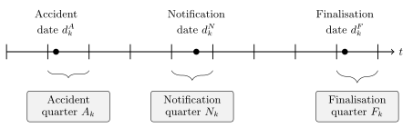
Key dates
A claim is open if not yet finalised.
\mathcal{O}(v) := \{ k : d_k^F > v \} \,.
(Though, technically, claims sometimes finalise, and then get reopened with further payments, and refinalised again.)
Series of incremental payments
| Event | Date | Amount |
|---|---|---|
| Accident | 2021-09-30 | |
| Notification | 2021-11-15 | |
| Payment #1 | 2022-05-17 | $9.00 |
| Payment #2 | 2022-08-31 | $2.00 |
| Payment #3 | 2022-10-23 | $2.00 |
| Payment #4 | 2022-12-20 | $4.00 |
| Payment #5 | 2023-02-19 | $2.00 |
| Payment #6 | 2023-05-31 | $3.00 |
| Payment #7 | 2023-07-08 | $18.00 |
| Payment #8 | 2023-09-10 | $8.00 |
| Finalisation | 2023-10-28 |
Case estimates
Alongside payments, the insurer holds a case estimate C_{k,v} \ge 0: a claims assessor’s live, subjective estimate of the outstanding liability at the end of quarter v.
The assessor is aiming for C_{k,v} \approx O_k(v) \,.
The crucial difference: C_{k,v} is known at time v, whereas O_k(v) is only knowable in retrospect, once the claim finalises.
So case estimates play two roles for us:
- a strong predictor to feed into the model, and
- a benchmark to beat (if the model can’t out-predict the assessors, why bother?).
See Taylor et al. (2008).
Payments and case estimates together
| Date | Event | Payment | Case estimate |
|---|---|---|---|
| 2021-11-15 | Notification, initial estimate | $30.00 | |
| 2022-05-17 | Payment #1 | $9.00 | $21.00 |
| 2022-06-20 | Review: worse than hoped | $35.00 | |
| 2022-08-31 | Payment #2 | $2.00 | $33.00 |
| 2022-10-23 | Payment #3 | $2.00 | $31.00 |
| 2022-12-20 | Payment #4 | $4.00 | $27.00 |
| 2023-02-19 | Payment #5 | $2.00 | $25.00 |
| 2023-05-31 | Payment #6 | $3.00 | $22.00 |
| 2023-07-08 | Payment #7 (settlement agreed) | $18.00 | $8.00 |
| 2023-09-10 | Payment #8 | $8.00 | $0.00 |
| 2023-10-28 | Finalisation | $0.00 |
From the policyholder’s perspective
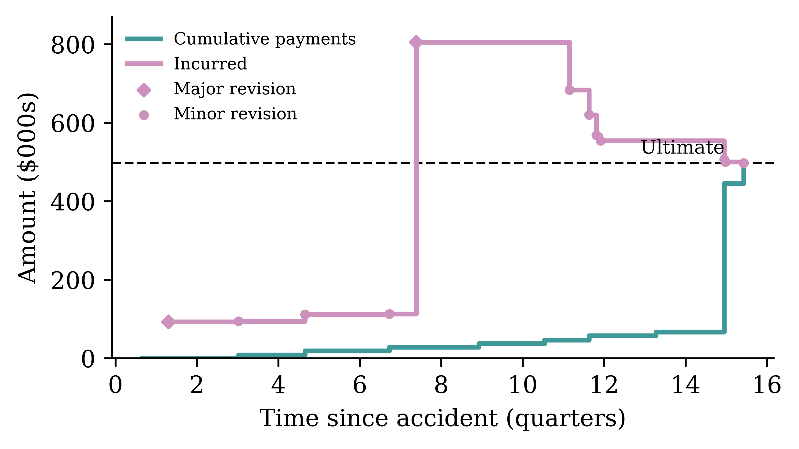
Payments step up toward the ultimate. The incurred, which is cumulative payments plus the case estimate of the outstanding, is the assessor’s running view of the ultimate.
From the insurer’s perspective
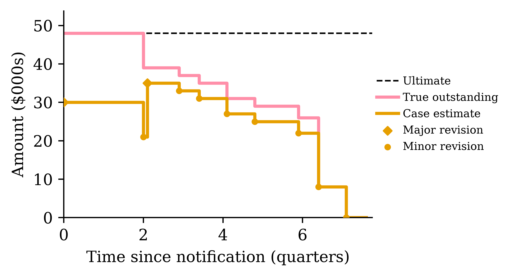
The true outstanding O_k(v) — the outstanding claims liability (OCL) — and the case estimate C_{k,v} (the assessor’s live forecast of it) both drop to zero.
Benchmark: Aggregate Reserving
Lecture Outline
Introduction
Insurance Claim Payments and Case Estimates
Benchmark: Aggregate Reserving
Individual Claim Modelling Choices
Preprocessing One Claim
Splitting Claims by Finalisation Quarter
Splitting Claims by Notification Quarter (Advanced)
Case Study: Synthetic Claims
Fitting the Models
Individual-level Metrics
Portfolio-level Metrics
Wrapping Up
Three levels of claim data granularity
- Individual transaction level: Stores every transaction or other update for every claim. Highest granularity. Often just visible in the insured’s bank statements, or in insurance company’s finance records. Usually considered too granular to be useful for actuaries.
- Individual quarterly summaries: This aggregates all the payments within a quarter (alternatively per month) for each claim. This is what the actuary would see.
- Portfolio quarterly summaries: Aggregates all payments within a quarter (alternatively per month) across all claims. This feeds into a Chain Ladder style of reserving.
Aggregate reserving
You have seen the classical approach to reserving already. The insurer’s past payments are aggregated into a run-off triangle: rows are accident years, columns are development years, and each cell holds the cumulative amount paid so far.
| Accident Year | Dev 1 | Dev 2 | Dev 3 |
|---|---|---|---|
| 2021 | 100 | 150 | 165 |
| 2022 | 120 | 180 | ? |
| 2023 | 140 | ? | ? |
The lower-right of the triangle is the future: it hasn’t happened yet, and the reserve is our estimate of it.
Chain ladder
Chain ladder fills in the triangle by assuming each accident year develops in the same proportions as the past ones.
- Development factor from Dev 1 to Dev 2: f_1 = \frac{150 + 180}{100 + 120} = 1.5
- Development factor from Dev 2 to Dev 3: f_2 = \frac{165}{150} = 1.1
Projecting forward:
| Accident Year | Dev 1 | Dev 2 | Dev 3 | Reserve |
|---|---|---|---|---|
| 2021 | 100 | 150 | 165 | 0 |
| 2022 | 120 | 180 | 198 | 18 |
| 2023 | 140 | 210 | 231 | 91 |
The total reserve here is 18 + 91 = 109.
What chain ladder ignores
Every claim in the same accident year is treated identically. The triangle has already thrown away:
- who was injured (age, injury severity),
- how the claim is progressing (legal representation, payment pattern),
- the case estimates set by claims assessors.
If two claims have paid out the same amount so far, chain ladder implicitly reserves the same for both, even if one is a minor injury about to finalise and the other is heading to court.
Why individual claim reserving?
With claim-level data and machine learning, we can use those discarded covariates to predict each claim’s outstanding amount separately.
- The portfolio reserve is then just a sum: T(v) = \sum_{k \in \mathcal{O}(v)} O_k(v).
- Per-claim predictions are useful beyond the total: claims triage (which claims need senior assessors?), segmenting the reserve by injury severity or legal representation, spotting claims whose case estimates look off.
- Chain ladder remains the benchmark: an individual model that can’t beat the triangle isn’t worth its complexity.
Note
Next week’s guest lecture digs into when and why aggregate models break down, and the trade-offs between micro- and macro-level models. Today we focus on individual-level approach and how to implement it.
Individual Claim Modelling Choices
Lecture Outline
Introduction
Insurance Claim Payments and Case Estimates
Benchmark: Aggregate Reserving
Individual Claim Modelling Choices
Preprocessing One Claim
Splitting Claims by Finalisation Quarter
Splitting Claims by Notification Quarter (Advanced)
Case Study: Synthetic Claims
Fitting the Models
Individual-level Metrics
Portfolio-level Metrics
Wrapping Up
A few major choices upfront
- What are the model inputs and outputs?
Predictions are made from the perspective of some fixed time v, the valuation quarter.
The individual claim model has:
- Input: an X_{k,v} summarising the claim’s history up to v.
- Output: either the ultimate claim size U_k or the outstanding value O_k(v).
- Are we performing traditional regression or distributional regression?
Two potential targets: ultimate or outstanding
The output distribution can sit on either of two quantities:
- the ultimate U_k, or
- the outstanding O_k(v) = U_k - \sum_{t \le v} P_{k,t}.
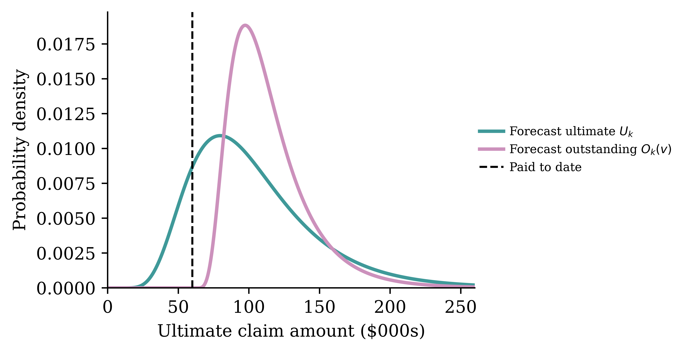
See Al-Mudafer et al. (2022) for distributional forecasts of individual claims using MDNs.
Claim snapshots
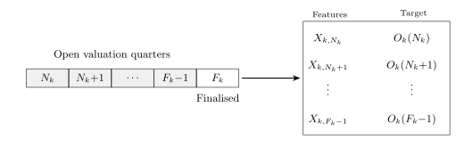
We will turn one claim into multiple “claim snapshots”/rows of input.
One finalised claim, viewed retrospectively from every quarter it was open, yields one training example: (X_{k,v},\ O_k(v)) \text{ for } v = N_k, \dots, F_k - 1\,.
Note, claims with N_k = F_k just dissapear.
See Avanzi et al. (2026).
Preprocessing One Claim
Lecture Outline
Introduction
Insurance Claim Payments and Case Estimates
Benchmark: Aggregate Reserving
Individual Claim Modelling Choices
Preprocessing One Claim
Splitting Claims by Finalisation Quarter
Splitting Claims by Notification Quarter (Advanced)
Case Study: Synthetic Claims
Fitting the Models
Individual-level Metrics
Portfolio-level Metrics
Wrapping Up
One claim’s full history
Noting the quarters
Each event date is binned into its calendar quarter (A_k, N_k, F_k), and we also track the development quarter (quarters since the accident).
Quarterly aggregation
All payments within a quarter collapse into one number, P_{k,t}. Case estimates within a quarter are instead summarised by their latest value.
Adjusting for inflation
We need to adjust all monetary units to a common date to remove inflation.
Adjusting for inflation, applied
Each of the selected claim’s quarters gets an adjustment factor from the index.
Calculate inflation-adjusted outstanding
Compute the outstanding O_k(v) retrospectively at every quarter v it was open.
From history to features
Everything known about claim k at valuation quarter v: \mathcal{H}_{k,v} := \left\{A_k, N_k, (Z_{k,t})_{t\le v},\ (P_{k,t})_{t\le v},\ (C_{k,t})_{t\le v}\right\}
Some covariates Z_{k,t} are static (age at accident, injury severity), others are time-varying (legal representation can switch on mid-claim).
Problem: this history has a different length for every (k, v). Tabular neural networks want a fixed-length vector.
The preprocessing pipeline is a deterministic map X_{k,v} := \Phi(\mathcal{H}_{k,v}) \in \mathbb{R}^p .
Two kinds of time-varying covariates
When \Phi compresses the history, the time-varying covariates split into two kinds:
- Only the latest value matters. E.g. legal representation status, or the current case estimate: keep Z_{k,v}, discard the path. (Implicitly a Markov-style assumption: the current state is a sufficient summary.)
- The path matters. E.g. the payments-per-quarter series: a claim that paid $40 in one early lump differs from one that dribbled out $10 four times. These get summarised as functions of the whole history — they are path-dependent features.
Deciding which kind each covariate is is itself a modelling choice: treating the case estimate as “latest value only” throws away how often the assessor has revised it.
Summarising the payment history
How does \Phi compress a variable-length payment history into fixed columns? Summary statistics:
- development quarter v - A_k, notification delay N_k - A_k,
- count / sum / mean / std / min / max of past payments,
- the latest case estimate,
- current values of the time-varying covariates,
- the static covariates unchanged.
Alternative: let an RNN read the history
The claim history is naturally a sequence — one vector per development quarter: \bigl( P_{k,t},\ C_{k,t},\ Z_{k,t} \bigr) \quad \text{for } t = N_k, \dots, v .
So instead of hand-crafting summary statistics, we could:
- feed the quarter-by-quarter vectors into a recurrent layer (e.g. GRU/LSTM),
- take the final hidden state as a learned summary of the history,
- concatenate the static covariates, and predict O_k(v) with a dense head.
Avanzi et al. (2026) compares exactly this design against the summary-statistics pipeline.
Preparing features for a neural network
Finally, add standard NN preprocessing (\log(1+x) transforming monetary values), encoding categoricals, normalising continuous features.
Splitting Claims by Finalisation Quarter
Lecture Outline
Introduction
Insurance Claim Payments and Case Estimates
Benchmark: Aggregate Reserving
Individual Claim Modelling Choices
Preprocessing One Claim
Splitting Claims by Finalisation Quarter
Splitting Claims by Notification Quarter (Advanced)
Case Study: Synthetic Claims
Fitting the Models
Individual-level Metrics
Portfolio-level Metrics
Wrapping Up
A portfolio of claims over time
Now zoom out from one claim to the whole portfolio.
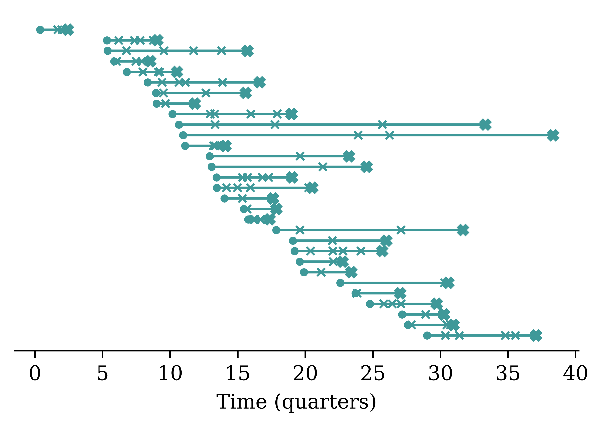
Every claim needs to be allocated to train, validation, or test — but claims overlap in time.
Remember, claim k generates F_k - N_k snapshot rows, and consecutive snapshots of the same claim are near-duplicates (the history only grows by one quarter). So: all snapshots from one claim go to the same set.
The simplest approach
Order claims by finalisation quarter, then cut into train, validation, and test eras:
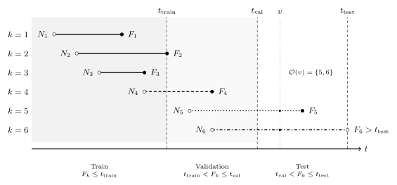
Those still open at t_{\text{test}} are the unfinalised set.
Old claims skew a naive split
Suppose we keep every claim notified after the portfolio’s inception — the obvious thing to do for a brand-new insurer. A hard wall then sits at the start: no claim reaches back across it.
A claim can only finalise in the train era if it both arrived and closed early, which caps its duration at t_{\text{train}}. Every genuinely long-running claim is forced past the cut, into validation or test.
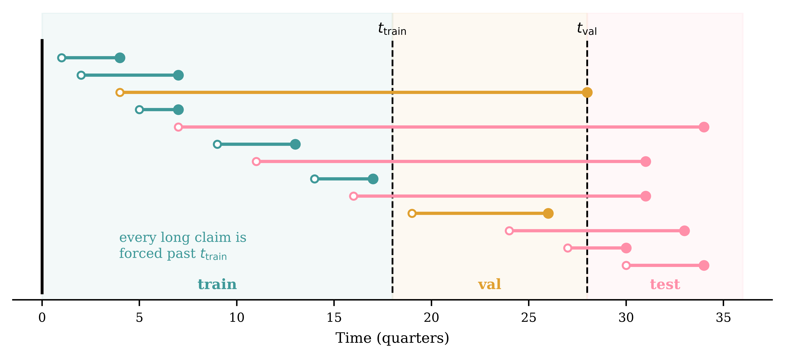
The train set never sees a long claim, yet the model is judged on them — a mismatch baked in by construction.
Fix: arrive at a steady-state portfolio
A real reserving team never starts at inception; they inherit a portfolio already in force, full of claims opened years earlier. We mimic that: simulate a long burn-in of history first, then keep every claim finalised after a chosen start date (not every claim notified after it).
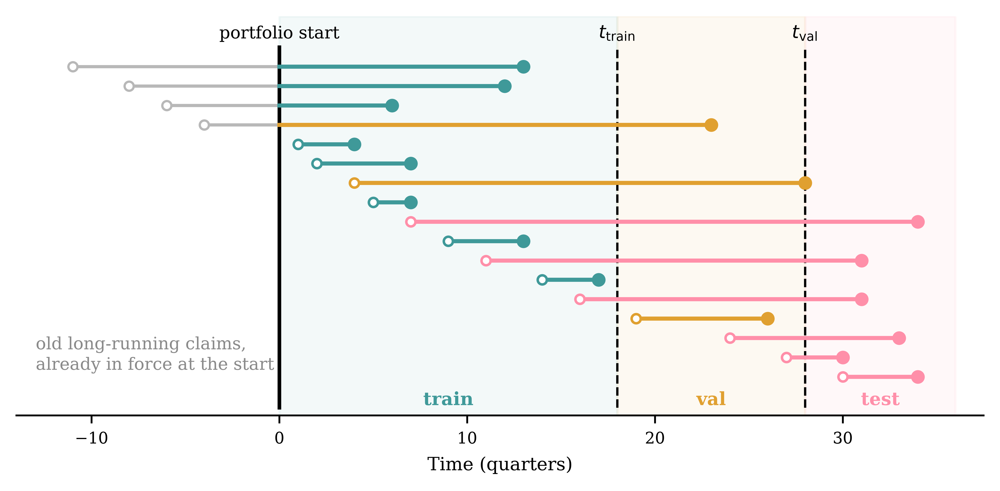
Old long-running claims now finalise inside the train era too, so every split carries the full spread of durations. We simulate many quarters and place the observation window deep in the steady state.
Splitting Claims by Notification Quarter (Advanced)
Lecture Outline
Introduction
Insurance Claim Payments and Case Estimates
Benchmark: Aggregate Reserving
Individual Claim Modelling Choices
Preprocessing One Claim
Splitting Claims by Finalisation Quarter
Splitting Claims by Notification Quarter (Advanced)
Case Study: Synthetic Claims
Fitting the Models
Individual-level Metrics
Portfolio-level Metrics
Wrapping Up
This is more complex
Never-finalising claims are censored
If the claim k is still open at the end of our dataset, then we have not observed the ultimate.
We only know a lower bound, U_k \ge \sum_{t \le v} P_{k,t}, i.e. it is a right-censored observation (the survival-analysis kind).
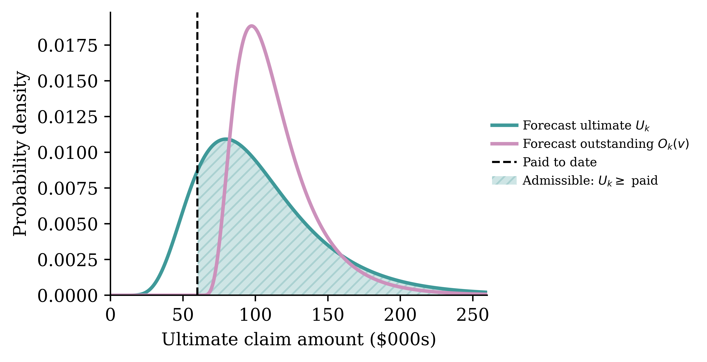
The ultimate model must put zero mass left of the dashed line. The outstanding model gets this free: it lives on [0, \infty) from the start.
Training directly on the censored ultimate
Keep the ultimate U_k as the target and borrow the censored likelihood from survival analysis.
- \delta_k \in \{0, 1\}: claim k is finalised (\delta_k = 1) or still open (\delta_k = 0).
- P_k(v) := \sum_{t \le v} P_{k,t}: the cumulative paid to date for claim k at the training cut v.
- Distributional regression: U_k \mid X_k \sim \mathcal{D}(\vartheta_k) with \vartheta_k = \vartheta(X_k; \theta), giving density f_k, cdf F_k, and survival S_k = 1 - F_k.
What we actually observe:
- Finalised (\delta_k = 1): the exact ultimate U_k = u_k.
- Open (\delta_k = 0): only the bound U_k \ge P_k(v) (right-censored at P_k(v)).
The censored log-likelihood
A finalised claim contributes its density at u_k; an open claim contributes its survival at P_k(v) (all we know is U_k \ge P_k(v)):
L(\theta) = \prod_{k=1}^{n} \big[\,f_k(u_k)\,\big]^{\delta_k}\,\big[\,S_k\!\big(P_k(v)\big)\,\big]^{1 - \delta_k} \,.
The loss is the negative log-likelihood:
-\ell(\theta) = -\sum_{k=1}^{n} \Big[\, \delta_k \log f_k(u_k) \;+\; (1 - \delta_k)\log\big(1 - F_k(P_k(v))\big) \,\Big] \,.
Open claims still inform \theta through the survival term S_k\!\big(P_k(v)\big): the constraint U_k \ge P_k(v) is genuinely informative when the target is the ultimate.
But if we’re predicting the outstanding…
We’ll predict the outstanding O_k(v) rather than the ultimate U_k directly.
- For a censored claim, the bound U_k \ge P_k(v) becomes just O_k(v) \ge 0.
- Any sensible model of the outstanding only predicts positive values.
- So the censoring constraint is satisfied by construction — censored claims carry no usable information, and we can simply drop them.
Case Study: Synthetic Claims
Lecture Outline
Introduction
Insurance Claim Payments and Case Estimates
Benchmark: Aggregate Reserving
Individual Claim Modelling Choices
Preprocessing One Claim
Splitting Claims by Finalisation Quarter
Splitting Claims by Notification Quarter (Advanced)
Case Study: Synthetic Claims
Fitting the Models
Individual-level Metrics
Portfolio-level Metrics
Wrapping Up
Imports for the case study
The R side simulates the data and runs the classical benchmark:
The Python side does the machine learning:
import random
import numpy as np
import pandas as pd
from sklearn.compose import ColumnTransformer
from sklearn.linear_model import Ridge
from sklearn.metrics import root_mean_squared_error
from sklearn.pipeline import make_pipeline
from sklearn.preprocessing import FunctionTransformer, MinMaxScaler, OneHotEncoder
from keras.models import Sequential
from keras.layers import Dense
from keras.callbacks import EarlyStoppingSPLICE package (Avanzi et al., 2023); ChainLadder package (Gesmann et al., 2026).
Generating synthetic claims with SPLICE
[1] "Generating claims, payments, incurred data with complexity = 2 (scenario: claim development depends on claim size) ,,,"Four main tables:
- claim-level information
- claim-level covariates,
- payment history, and
- case estimate revision history.
Under the hood, SynthETIC (Avanzi et al., 2021) generates the claims, payments and claim-level covariates, while SPLICE adds the case estimates.
All claims
All static covariates
All payments
All estimates
Minor tweaks
Add the static covariates to the claims dataframe:
SPLICE names the case-estimate column OCL; rename it to estimate:
Drop the incurred column, since it is just cumpaid plus estimate:
SPLICE’s estimates are nominal, so (for simplicity) we manually remove inflation:
One synthetic claim’s payments
One claim’s payments (note the paired nominal/deflated columns):
| pmt_no | payment_time | payment_period | payment_size | payment_inflated | |
|---|---|---|---|---|---|
| 0 | 1.0 | 3.433536 | 4.0 | 3443.887887 | 3502.928359 |
| 1 | 2.0 | 7.205018 | 8.0 | 3634.989595 | 3766.988290 |
| 2 | 3.0 | 7.770359 | 8.0 | 15120.618241 | 15713.616650 |
| 3 | 4.0 | 8.874430 | 9.0 | 1785.719555 | 1865.922752 |
One synthetic claim’s case estimates
Its case estimate transactions:
| txn_time | txn_type | cumpaid | estimate | |
|---|---|---|---|---|
| 0 | 2.553306 | Ma | 0.000000 | 28070.664592 |
| 1 | 3.433536 | PMi | 3502.928359 | 25734.342075 |
| 2 | 5.770253 | Mi | 3502.928359 | 26269.964789 |
| … | … | … | … | … |
| 6 | 7.770359 | P | 22983.533298 | 2037.350270 |
| 7 | 8.193496 | Mi | 22983.533298 | 1857.027805 |
| 8 | 8.874430 | PMi | 24849.456051 | 0.000000 |
9 rows × 4 columns
From transactions to snapshot rows
Bin each claim’s key dates into quarters, and sort the claims into groups:
# We "arrive" at the portfolio at T_START and value it at T_END: keep claims
# that finalise inside this steady-state window, not those that merely start in it.
T_START, T_END = 60, 100
claims["notif_qtr"] = np.ceil(claims["occurrence_time"] + claims["notidel"]).astype(int)
claims["final_qtr"] = np.ceil(claims["occurrence_time"] + claims["notidel"] + claims["setldel"]).astype(int)
notif, final = claims["notif_qtr"], claims["final_qtr"]
is_ibnr = notif > T_END
is_unfinalised = (notif <= T_END) & (final > T_END)
is_flash = (final <= T_END) & (final == notif)
is_finalised = (final > T_START) & (final <= T_END) & (final > notif)
# The claims we model: those finalised inside the window (which carry a known
# target) plus those still open at T_END (which are what we must reserve for).
observed = claims[is_finalised | is_unfinalised]9,974 claims: 3,935 finalised & usable, 971 unfinalised, 214 IBNR, 162 settled within a quarterBuilding the snapshot grid
One row per claim per open quarter, with the quarterly payments P_{k,t} merged in (missing quarters become zero-payment rows).
Code
# Snapshots stop at the valuation date, so an unfinalised claim gets rows up to
# T_END and no further — no payment from beyond T_END can join in below.
last_qtr = np.minimum(observed["final_qtr"], T_END + 1)
n_snapshots = (last_qtr - observed["notif_qtr"]).to_numpy()
grid = observed.loc[observed.index.repeat(n_snapshots),
["claim_no", "occurrence_period", "notif_qtr", "final_qtr", "notidel",
"Legal Representation", "Injury Severity", "Age of Claimant"]].copy()
grid["quarter"] = grid["notif_qtr"] + grid.groupby("claim_no").cumcount()
quarterly = (payments.rename(columns={"payment_period": "quarter"})
.groupby(["claim_no", "quarter"])["payment_size"]
.sum().rename("Incremental").reset_index())
grid = grid.merge(quarterly, on=["claim_no", "quarter"], how="left")
grid["Incremental"] = grid["Incremental"].fillna(0.0)Before — one row per claim:
| claim_no | notif_qtr | final_qtr | |
|---|---|---|---|
| 2823 | 2824 | 31 | 61 |
| 2919 | 2920 | 31 | 65 |
| 2987 | 2988 | 32 | 63 |
After — one row per claim per open quarter:
| claim_no | quarter | Incremental | |
|---|---|---|---|
| 0 | 2824 | 31 | 0.00 |
| 1 | 2824 | 32 | 0.00 |
| 2 | 2824 | 33 | 0.00 |
| 3 | 2824 | 34 | 0.00 |
| 4 | 2824 | 35 | 24071.86 |
| 5 | 2824 | 36 | 0.00 |
History summaries, case estimates, and the target
Onto that grid we add the path-dependent features (expanding summaries of the payment history), the current-state features (latest case estimate, forward-filled between revisions).
Code
# A quarter with no payment is a gap in the history, not a $0 payment, so the
# summaries below run over the payments only (expanding() skips the NaNs).
paid = grid["Incremental"].where(grid["Incremental"] > 0)
g = paid.groupby(grid["claim_no"])
grid["count_Incremental"] = paid.notna().groupby(grid["claim_no"]).cumsum()
grid["sum_Incremental"] = grid.groupby("claim_no")["Incremental"].cumsum()
for stat in ["mean", "std", "min", "max"]:
grid[f"{stat}_Incremental"] = g.expanding().agg(stat).to_numpy()
# Rows before the claim's first payment have no payments to summarise.
stat_cols = [f"{stat}_Incremental" for stat in ["mean", "std", "min", "max"]]
grid[stat_cols] = grid[stat_cols].fillna(0.0)
ultimate = payments.groupby("claim_no")["payment_size"].sum()
grid["Outstanding"] = grid["claim_no"].map(ultimate) - grid["sum_Incremental"]
grid["development_period"] = grid["quarter"] - grid["occurrence_period"] + 1
# Guard the log target. Every SPLICE claim pays at settlement, so this drops
# nothing here; on real data it is where the zero and negative targets surface.
assert (grid["Outstanding"] > 0).all(), "log target needs positive outstanding"Code
estimates["quarter"] = np.ceil(estimates["txn_time"]).astype(int)
latest = (estimates.sort_values("txn_time")
.groupby(["claim_no", "quarter"])["estimate"].last()
.rename("Estimate").reset_index())
grid = grid.merge(latest, on=["claim_no", "quarter"], how="left")
grid["Estimate"] = grid.groupby("claim_no")["Estimate"].ffill()Before — one claim’s rows:
| quarter | Incremental | |
|---|---|---|
| 0 | 31 | 0.00 |
| 1 | 32 | 0.00 |
| 2 | 33 | 0.00 |
| 3 | 34 | 0.00 |
| 4 | 35 | 24071.86 |
After — summaries, case estimate, and the label O_k(v):
| quarter | sum_Incremental | Estimate | Outstanding | |
|---|---|---|---|---|
| 0 | 31 | 0.00 | 106362.62 | 1573886.40 |
| 1 | 32 | 0.00 | 106362.62 | 1573886.40 |
| 2 | 33 | 0.00 | 106362.62 | 1573886.40 |
| 3 | 34 | 0.00 | 106362.62 | 1573886.40 |
| 4 | 35 | 24071.86 | 80251.97 | 1549814.53 |
The dataset after preprocessing
| claim_no | quarter | development_period | Incremental | sum_Incremental | Estimate | Outstanding | |
|---|---|---|---|---|---|---|---|
| 0 | 2824 | 31 | 3.0 | 0.0 | 0.000000 | 106362.617277 | 1.573886e+06 |
| 1 | 2824 | 32 | 4.0 | 0.0 | 0.000000 | 106362.617277 | 1.573886e+06 |
| 2 | 2824 | 33 | 5.0 | 0.0 | 0.000000 | 106362.617277 | 1.573886e+06 |
| … | … | … | … | … | … | … | … |
| 5 | 2824 | 36 | 8.0 | 0.0 | 24071.863793 | 80251.970018 | 1.549815e+06 |
| 6 | 2824 | 37 | 9.0 | 0.0 | 24071.863793 | 80251.970018 | 1.549815e+06 |
| 7 | 2824 | 38 | 10.0 | 0.0 | 24071.863793 | 80251.970018 | 1.549815e+06 |
8 rows × 7 columns
Splitting by finalisation quarter
T_TRAIN, T_VAL = 88, 94 # grid already starts at T_START, so train is (60, 88]
train = grid[grid["final_qtr"] <= T_TRAIN]
val = grid[(grid["final_qtr"] > T_TRAIN) & (grid["final_qtr"] <= T_VAL)]
test = grid[(grid["final_qtr"] > T_VAL) & (grid["final_qtr"] <= T_END)]
# Still open at the valuation date: no known target, so these are never trained
# or scored on — they are the claims we must reserve for. Keep each one's
# valuation-date row, the single snapshot we predict from.
unfinalised = grid[(grid["final_qtr"] > T_END) & (grid["quarter"] == T_END)]train 28,992 rows 2,790 claims (finalisation quarters 61..88)
val 6,273 rows 598 claims (finalisation quarters 89..94)
test 5,593 rows 547 claims (finalisation quarters 95..100)
unfin 971 rows 971 claims (finalisation quarters 101..137)Note rows \gg claims: each claim contributes one row per quarter it was open — and every one of a claim’s rows lands in the same set. The unfinalised set is the exception: one row per claim, at the valuation date.
Fitting the Models
Lecture Outline
Introduction
Insurance Claim Payments and Case Estimates
Benchmark: Aggregate Reserving
Individual Claim Modelling Choices
Preprocessing One Claim
Splitting Claims by Finalisation Quarter
Splitting Claims by Notification Quarter (Advanced)
Case Study: Synthetic Claims
Fitting the Models
Individual-level Metrics
Portfolio-level Metrics
Wrapping Up
Preprocessing setup
Two versions: without and with the case estimate as a feature.
dollar_cols = ["Incremental", "sum_Incremental", "mean_Incremental",
"std_Incremental", "min_Incremental", "max_Incremental"]
numeric_cols = ["development_period", "notidel", "count_Incremental"]
cat_cols = ["Legal Representation", "Injury Severity", "Age of Claimant"]
def make_preprocessor(with_estimate):
dollars = dollar_cols + (["Estimate"] if with_estimate else [])
return ColumnTransformer([
("dollars", make_pipeline(FunctionTransformer(np.log1p, feature_names_out="one-to-one"), MinMaxScaler()), dollars),
("numeric", MinMaxScaler(), numeric_cols),
("categorical", OneHotEncoder(drop="first", sparse_output=False), cat_cols),
])Setup X & y variables
We model \log O_k(v) rather than O_k(v) because the outstanding is heavy-tailed.
y_train = np.log(train["Outstanding"])
y_val = np.log(val["Outstanding"])
y_test = np.log(test["Outstanding"])
ct_plain = make_preprocessor(with_estimate=False)
X_train_plain = ct_plain.fit_transform(train)
X_val_plain = ct_plain.transform(val)
X_test_plain = ct_plain.transform(test)
X_unfinalised_plain = ct_plain.transform(unfinalised)
ct_est = make_preprocessor(with_estimate=True)
X_train_est = ct_est.fit_transform(train)
X_val_est = ct_est.transform(val)
X_test_est = ct_est.transform(test)
X_unfinalised_est = ct_est.transform(unfinalised)Fitting individual claim models
random.seed(1)
nn = Sequential([
Dense(30, activation="leaky_relu"),
Dense(30, activation="leaky_relu"),
Dense(1)])
nn.compile(optimizer="adam", loss="mse")
es = EarlyStopping(patience=10, restore_best_weights=True)
hist = nn.fit(X_train_est, y_train, epochs=100,
validation_data=(X_val_est, y_val), callbacks=[es], verbose=0)Individual-level Metrics
Lecture Outline
Introduction
Insurance Claim Payments and Case Estimates
Benchmark: Aggregate Reserving
Individual Claim Modelling Choices
Preprocessing One Claim
Splitting Claims by Finalisation Quarter
Splitting Claims by Notification Quarter (Advanced)
Case Study: Synthetic Claims
Fitting the Models
Individual-level Metrics
Portfolio-level Metrics
Wrapping Up
Evaluating the models
MSE loss on \log O_k(v) is then a lognormal assumption for the outstanding, so every RMSE below is on the log scale, not in dollars.
Case estimates alone test RMSE (log scale) = 1.418
GLM without case estimates test RMSE (log scale) = 1.150
GLM with case estimates test RMSE (log scale) = 0.977
Neural network with case estimates test RMSE (log scale) = 0.724Note
On this synthetic portfolio the payment history already carries most of the signal, so the case estimates may add little as a feature. On real data, assessors know things the payment stream doesn’t, and case estimates tend to matter much more.
Predicted vs actual outstanding
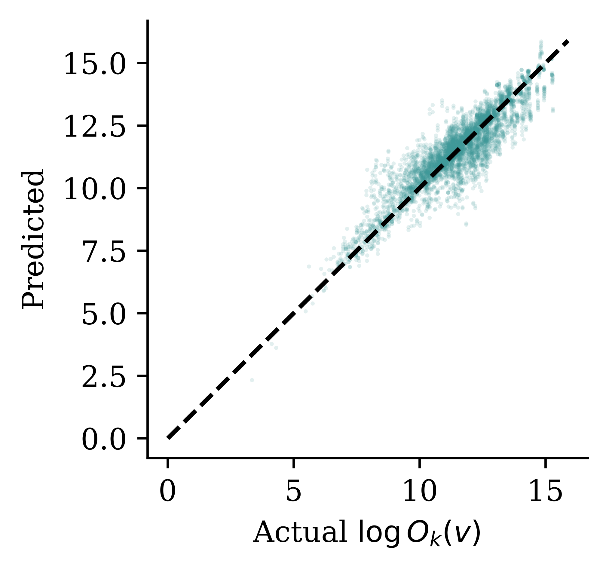
Each point is one test-set snapshot (X_{k,v}, O_k(v)), plotted on the model’s log scale; the dashed diagonal is perfect prediction.
Exponentiating log predictions under-reserves
Squared-error loss on \log O_k(v) is exactly the constant-variance normal assumption from distributional regression, \log O_k(v) \sim \mathcal{N}(\mu_k, \sigma^2), so on the dollar scale O_k(v) is lognormal. The naive \exp(\mu_k) is its median; a reserve needs the mean, \exp\!\big(\mu_k + \tfrac{1}{2}\sigma^2\big).
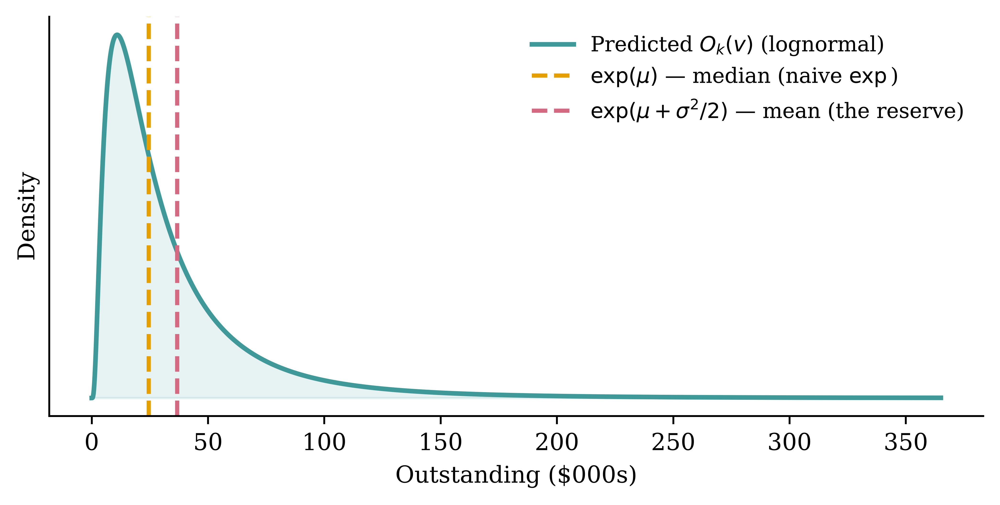
Dropping the \tfrac12\sigma^2 term predicts the median and systematically under-reserves; we add it back, estimating \sigma by the log-scale RMSE.
Converting back to dollars
def to_dollars(pred_log, sigma2): # lognormal mean, exp(mu + sigma^2/2)
return np.exp(pred_log + sigma2 / 2)
# sigma^2 per model: its squared validation RMSE on the log scale.
sigma2_plain = np.mean((y_val - glm_plain.predict(X_val_plain)) ** 2)
sigma2_est = np.mean((y_val - glm_est.predict(X_val_est)) ** 2)
sigma2_nn = np.mean((y_val - nn.predict(X_val_est, verbose=0).flatten()) ** 2)Did our model beat the professionals?
Better% is the share of test snapshots we win vs the case estimates.
actual = test["Outstanding"]
# How far each forecast is from the truth, proportionally (a log-scale gap).
case_gap = np.abs(np.log(test["Estimate"] / actual)) # the assessor's gap
def beats_assessor(pred_log, sigma2):
model_gap = np.abs(np.log(to_dollars(pred_log, sigma2) / actual))
return model_gap < case_gap
wins_plain = beats_assessor(pred_plain, sigma2_plain)
wins_est = beats_assessor(pred_est, sigma2_est)
wins_nn = beats_assessor(pred_nn, sigma2_nn)
print(f"GLM without case estimates Better% = {wins_plain.mean():5.1%}")
print(f"GLM with case estimates Better% = {wins_est.mean():5.1%}")
print(f"Neural network with case estimates Better% = {wins_nn.mean():5.1%}")GLM without case estimates Better% = 35.7%
GLM with case estimates Better% = 34.1%
Neural network with case estimates Better% = 39.6%Weighted Better%
The portfolio reserve is dominated by the big claims, so weight each win by the claim’s ultimate — winning a $2m claim counts for more than winning a $5k one: \text{Weighted Better\%} \;=\; \sum_{k,v} w_{k,v} \,\mathbf{1}\{\text{model wins snapshot } (k,v)\}, \qquad w_{k,v} = \frac{U_k}{\sum_{(j,u)} U_j} .
weight = test["claim_no"].map(ultimate)
weight = weight / weight.sum()
print(f"GLM without case estimates Weighted Better% = "
f"{(weight * wins_plain).sum():5.1%}")
print(f"GLM with case estimates Weighted Better% = "
f"{(weight * wins_est).sum():5.1%}")
print(f"Neural network with case estimates Weighted Better% = "
f"{(weight * wins_nn).sum():5.1%}")GLM without case estimates Weighted Better% = 52.7%
GLM with case estimates Weighted Better% = 52.2%
Neural network with case estimates Weighted Better% = 60.1%Weighting by size lifts every model: they may trail the assessor on a plain count of claims, yet come out ahead on the large claims that actually move the reserve.
The Better% metrics come from Avanzi et al. (2026).
Portfolio-level Metrics
Lecture Outline
Introduction
Insurance Claim Payments and Case Estimates
Benchmark: Aggregate Reserving
Individual Claim Modelling Choices
Preprocessing One Claim
Splitting Claims by Finalisation Quarter
Splitting Claims by Notification Quarter (Advanced)
Case Study: Synthetic Claims
Fitting the Models
Individual-level Metrics
Portfolio-level Metrics
Wrapping Up
Benchmark: chain ladder
Per-snapshot accuracy is one lens — but a reserving model’s real job is the portfolio total.
# The triangle uses the observed window (accident quarters 61-100), shifted to
# 1-40 so it reads as ten fresh accident years valued at quarter 100.
window <- subset(payments, occurrence_period > 60 & payment_period <= 100)
window$acc_year <- ceiling((window$occurrence_period - 60) / 4)
window$dev_year <- ceiling((window$payment_period - 60) / 4) - window$acc_year + 1
incr <- aggregate(payment_size ~ acc_year + dev_year, window, sum)
tri <- incr2cum(as.triangle(incr, origin = "acc_year",
dev = "dev_year", value = "payment_size"))
round(tri / 1e6, 2) # cumulative payments, $m dev_year
acc_year 1 2 3 4 5 6 7 8 9
1 0.30 3.09 9.09 18.92 33.61 44.07 56.21 64.68 69.82
2 0.48 3.92 12.84 28.16 41.98 59.02 68.39 74.46 76.80
3 0.32 3.65 10.06 18.23 31.71 47.09 48.47 50.93 NA
4 0.38 4.43 12.12 26.74 40.39 53.48 64.34 NA NA
5 0.31 4.36 10.41 24.81 41.64 55.46 NA NA NA
6 0.31 3.41 11.87 21.74 35.67 NA NA NA NA
7 0.27 3.40 9.45 17.67 NA NA NA NA NA
8 0.33 3.45 10.43 NA NA NA NA NA NA
9 0.35 3.17 NA NA NA NA NA NA NA
10 0.36 NA NA NA NA NA NA NA NAThe chain ladder reserve
mack <- MackChainLadder(tri, est.sigma = "Mack")
reserve_cl <- summary(mack)$Totals["IBNR:", ]
true_outstanding <- sum(subset(payments, payment_period > 100)$payment_size)
cat(sprintf("Chain ladder reserve: $%.1fm\n", reserve_cl / 1e6),
sprintf("True total outstanding: $%.1fm\n", true_outstanding / 1e6))Chain ladder reserve: $275.2m
True total outstanding: $290.8mAggregate claim to estimate T(v)
Predict \widehat{O}_k(v) for each still-open claim, and sum to the portfolio reserve \widehat{T}(v).
reserves = {
"Chain ladder": float(r.reserve_cl),
"GLM": to_dollars(glm_plain.predict(X_unfinalised_plain), sigma2_plain).sum(),
"GLM + case est.": to_dollars(glm_est.predict(X_unfinalised_est), sigma2_est).sum(),
"Neural net + case est.": float(to_dollars(
nn.predict(X_unfinalised_est, verbose=0).flatten(), sigma2_nn).sum()),
}The portfolio reserves compared
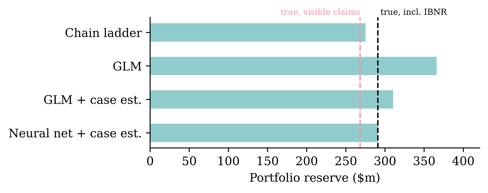
The individual models can only reserve for claims they can see, so their fair target is the lower value (left line); the chain ladder triangle implicitly projects the IBNR claims too, so its target is the larger value (right line).
Wrapping Up
Lecture Outline
Introduction
Insurance Claim Payments and Case Estimates
Benchmark: Aggregate Reserving
Individual Claim Modelling Choices
Preprocessing One Claim
Splitting Claims by Finalisation Quarter
Splitting Claims by Notification Quarter (Advanced)
Case Study: Synthetic Claims
Fitting the Models
Individual-level Metrics
Portfolio-level Metrics
Wrapping Up
Conclusions
Individual vs aggregate reserving:
- Aggregate (chain ladder on triangles): simple, stable, industry standard; but throws away claim-level covariates and gives no per-claim view.
- Individual: predicts O_k(v) per open claim; the portfolio reserve is just the sum T(v); supports triage and segmentation; per-claim errors partially cancel in the aggregate.
- Individual level reserving is a data engineering headache, and the total still misses IBNR, so an individual model alone is not yet a full portfolio reserve.
Next steps:
- IBNR: our model only reserves claims it can see; incurred-but-not-reported claims need a separate (usually aggregate) adjustment.
- Uncertainty: a reserve needs a risk margin, not just a point estimate; distributional forecasts and ensembling give prediction intervals.
Glossary
- case estimate
- censoring
- chain ladder
- claim snapshot
- development quarter
- finalisation
- IBNR claims
- incurred
- individual vs aggregate reserving
- lognormal variance correction
- notification, notification delay
- outstanding claim amount
- portfolio reserve / total outstanding
- run-off triangle
- steady-state portfolio
- ultimate claim size
- weighted Better%
Python package versions
R package versions
References